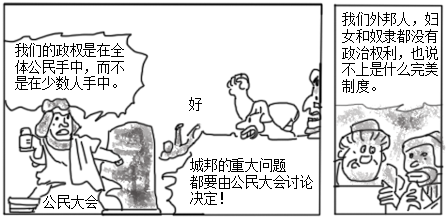

2018年北京市中考历史试题 · 选择题 第21、22、23、24、25题 · 对应解析
21．（3分）如图所示，漫画反映出古代雅典（ ）

A．通过扩张成为地中海霸主
B．重视教育并鼓励学术研究
C．所有居民都有参政的权利
D．公民大会是最高权力机构
【分析】本题考查古代雅典的民主政治。
【解答】从图中人物对话中的信息可知，强调的是雅典的民主和公民大会的重要性；A选项描述的是古罗马；B选项从图片中无法得出；C选项中“所有居民”表述错误，符合题意的为D选项。
故选：D。
【点评】本题旨在结合图画考查学生对雅典民主政治的掌握。需熟悉雅典民主政治的内容。
22．（3分）12世纪初，伦敦市民每年向王室缴纳300镑税金，以此获得国王对市民自选市长和市政官的许可。材料反映出中世纪欧洲（ ）
A．封君封臣制度逐步形成
B．国家税收主要来源于城市
C．城市获得了部分自治权
D．市民以暴力方式反抗贵族
【分析】本题考查了西欧城市的重新兴起。10世纪西欧开始出现作为手工业和商业的中心的城市。
【解答】12世纪初，伦敦市民每年向王室缴纳300镑税金，以此获得国王对市民自选市长和市政官的许可。材料反映出中世纪欧洲城市获得了部分自治权。随着商品经济的发展，封建主日益贪婪，对城市市民加紧剥削。十一二世纪，法国一些城市的市民展开了与封建主的斗争，有的城市用金钱赎买、有的通过武力赢得自治权。琅城市民争取自治的斗争是一个典型的例子。
故选：C。
【点评】本题属于材料型选择题，主要考查学生的阅读分析能力，解答此类必须认真阅读材料，结合所学知识提炼材料中的重要信息和观点。
23．（3分）1493年，一封发自西班牙的信件中说：“有个叫克里斯托弗・哥伦布的人，航行到了地球另一端，直抵印度附近地区一一至少他这么认为。”信中的“地球另一端”实际是（ ）
A．美洲B．大洋洲C．亚洲D．非洲
【分析】本题以1493年，一封发自西班牙的信件为依托，考查新航路开辟的知识点。注意掌握相关基础知识。
【解答】材料中的“1493”“哥伦布”是解题的关键信息。1492年，哥伦布受西班牙王室的资助，到达今天美洲的古巴、海地等地。但哥伦布始终相信自己到的地方是亚洲的印度。因而信中的“地球另一端”实际是美洲。
故选：A。
【点评】本题考查学生识记和分析历史知识的能力，识记与灵活掌握新航路开辟的原因、经过、结果和历史影响。
24．（3分）《拿破仑法典》反映了保护私有财产，废除法律面前的阶级差异等原则。这说明拿破仑（ ）
A．领导法国人民推翻封建王朝
B．维护法国大革命成果
C．给欧洲各国带来了民族压迫
D．在法国实行专制统治
【分析】本题主要考查《拿破仑法典》的相关史实。《拿破仑法典》把资产阶级革命用法律形式固定下来，它是一部典型的资产阶级法典。
【解答】《拿破仑法典》把资产阶级革命用法律形式固定下来，它是一部典型的资产阶级法典。《拿破仑法典》反映了保护私有财产，废除法律面前的阶级差异等原则，打击了欧洲封建势力，推动了欧洲资本主义的发展，维护法国大革命成果，成为近代欧洲各国资产阶级法典的范本。选项B符合题意。
故选：B。
【点评】本题主要考查解读题干信息和对历史史实的分析和准确识记能力。理解并识记《拿破仑法典》的相关史实。
25．（3分）一位历史学家说：“推翻德川幕府的人一旦掌政权，他们认为驱逐西方的唯一方法就是学习西方的技术和管理秘诀……为了保卫国家，他们显然要认真地改造国家。”材料中“改造国家”的事件是（ ）
A．大化改新B．彼得一世改革
C．明治维新D．俄国农奴制改革
【分析】本题考查了日本明治维新。日本强大起来以后，很快走上了对外侵略扩张的军国主义道路。
【解答】一位历史学家说：“推翻德川幕府的人一旦掌政权，他们认为驱逐西方的唯一方法就是学习西方的技术和管理秘诀……为了保卫国家，他们显然要认真地改造国家。”材料中“改造国家”的事件是明治维新。1868年明治政府实行了一系列资产阶级性质的改革，主要内容有：政治方面，“废藩置县”，加强中央集权；经济方面，允许土地买卖，引进西方技术，鼓励发展近代工业；社会生活方面，提倡文明开化，即向欧美学习，努力发展教育。明治维新使日本从一个闭关锁国的封建国家，逐步转变为资本主义国家，摆脱了沦为半殖民地国家的命运，是日本历史的重大转折点。但日本强大起来以后，很快走上了对外侵略扩张的军国主义道路。
故选：C。
【点评】本题考查学生对历史知识的灵活运用能力，需要灵活运用日本明治维新的内容、影响。